第1世代（カントー地方）ポケモンの英語名一覧
全151匹の英語名と由来
第1世代（カントー地方）のポケモン151匹の英語名を、図鑑番号順にまとめました。名前を押すと、英語版図鑑の説明文と日本語訳、英語名の由来が見られます。
| No. | 日本語名 | 英語名 | 英語名の由来 |
|---|---|---|---|
| 001 | Bulbasaur | bulb（球根）とdinosaur（恐竜） | |
| 002 | 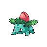 フシギソウ | Ivysaur | ivy（ツタ）とdinosaur（恐竜） |
| 003 | Venusaur | Venus（ローマ神話の女神ヴィーナス）、venom（毒）とdinosaur（恐竜） | |
| 004 | Charmander | char（焦がす）とsalamander（サンショウウオ） | |
| 005 | Charmeleon | char（焦がす）とchameleon（カメレオン） | |
| 006 | Charizard | char（焦がす）とlizard（トカゲ） | |
| 007 | Squirtle | squirt（水を噴き出す）とturtle（カメ） | |
| 008 | Wartortle | war（戦争）、warrior（戦士）、water（水）とtortoise（リクガメ） | |
| 009 | Blastoise | blast（爆風）とtortoise（リクガメ） | |
| 010 | Caterpie | フランス語の名前は「Chenipan」で、chenille（イモムシ）、chenapan（いたずらっ子）から作られている | |
| 011 | Metapod | metamorphosis（変身）とpod（さや） | |
| 012 | Butterfree | butterfly（チョウ）とfree（自由な） | |
| 013 | 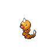 ビードル | Weedle | worm（虫）とneedle（針） |
| 014 | Kakuna | cocoon（まゆ）がもとになっていると考えられている | |
| 015 | Beedrill | bee（ハチ）とdrill（ドリル） | |
| 016 | Pidgey | pigeon（ハト）、chickadee（コガラ）とpudgy（ずんぐりした） | |
| 017 | 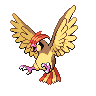 ピジョン | Pidgeotto | Columbidae（ハト科）がもとになっていると考えられている |
| 018 | Pidgeot | Columbidae（ハト科）とjet aircraft（ジェット機） | |
| 019 | Rattata | rat（ネズミ）とattack（攻撃） | |
| 020 | Raticate | rat（ネズミ）、eradicate（根絶する）とmasticate（かむ） | |
| 021 | Spearow | spear（槍）とsparrow（スズメ） | |
| 022 | Fearow | fear（恐怖）とsparrow（スズメ） | |
| 023 | Ekans | フランス語の名前は「Abo」で、「ボア（ヘビ）」の文字の並べかえから作られている | |
| 024 | Arbok | ||
| 025 | Pikachu | ||
| 026 | Raichu | ||
| 027 | Sandshrew | sand（砂）とshrew（トガリネズミ） | |
| 028 | 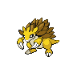 サンドパン | Sandslash | sand（砂）とslash（切りつける） |
| 029 | 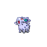 ニドラン♀ | Nidoran♀ | needle（針）がもとになっていると考えられている |
| 030 | Nidorina | needle（針）、rhinoceros（サイ）と-ina（小さいものや女性を表す語尾） | |
| 031 | Nidoqueen | queen（女王）がもとになっていると考えられている | |
| 032 | 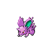 ニドラン♂ | Nidoran♂ | needle（針）がもとになっていると考えられている |
| 033 | 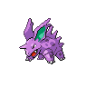 ニドリーノ | Nidorino | needle（針）、rhinoceros（サイ）と-ino（小さいものを表す語尾） |
| 034 | Nidoking | king（王）がもとになっていると考えられている | |
| 035 | 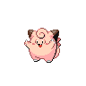 ピッピ | Clefairy | clef（音部記号）とfairy（妖精） |
| 036 | Clefable | clef（音部記号）とfable（寓話） | |
| 037 | 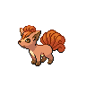 ロコン | Vulpix | vulpes（ラテン語で「キツネ」）とsix（6） |
| 038 | Ninetales | nine（9）とtales（物語） | |
| 039 | Jigglypuff | jiggly（ぷるぷるした）とpuff（ふくらむ） | |
| 040 | Wigglytuff | wiggly（くねくねした）、tough（たくましい）とtuft（ふさ） | |
| 041 | 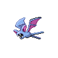 ズバット | Zubat | bat（コウモリ）がもとになっていると考えられている |
| 042 | Golbat | gore（血のり）、ghoul（悪鬼）、gulp（ごくりと飲む）とbat（コウモリ） | |
| 043 | Oddish | oddish（ナゾノクサ）、odd（奇妙な）とradish（ダイコン） | |
| 044 | 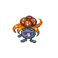 クサイハナ | Gloom | gloom（暗がり）、goo（べとべとしたもの）、glue（のり）とFlower（花） |
| 045 | Vileplume | vile（卑劣な）がもとになっていると考えられている | |
| 046 | Paras | Parasitism（寄生）がもとになっていると考えられている | |
| 047 | Parasect | parasitism（寄生）とinsect（昆虫） | |
| 048 | 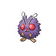 コンパン | Venonat | venom（毒）とgnat（ブヨ） |
| 049 | 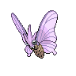 モルフォン | Venomoth | venom（毒）とmoth（ガ） |
| 050 | Diglett | dig（掘る）と-let（「小さい〜」を表す語尾） | |
| 051 | Dugtrio | dug（掘った）とtrio（3人組） | |
| 052 | Meowth | meow（ニャー）がもとになっていると考えられている | |
| 053 | Persian | ドイツ語の名前は「Snobilikat」で、Snob（気取り屋）、nobilis（ラテン語で「高貴な」）、Katze（猫… | |
| 054 | Psyduck | psy-（「心の」を表す接頭語）、psychic（超能力）とduck（カモ） | |
| 055 | 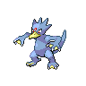 ゴルダック | Golduck | gold（金）とduck（カモ） |
| 056 | Mankey | mad（怒った）、man（人）とmonkey（サル） | |
| 057 | Primeape | prime（最高の）、primate（霊長類）とape（類人猿） | |
| 058 | Growlithe | growl（うなる）とlithe（しなやかな） | |
| 059 | 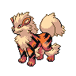 ウインディ | Arcanine | arcane（秘密の）とcanine（犬の） |
| 060 | 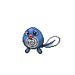 ニョロモ | Poliwag | polliwog（オタマジャクシ）がもとになっていると考えられている |
| 061 | Poliwhirl | tadpole（オタマジャクシ）とwhirl（ぐるぐる回る） | |
| 062 | 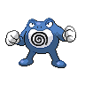 ニョロボン | Poliwrath | tadpole（オタマジャクシ）とwrath（激しい怒り） |
| 063 | Abra | abracadabra（呪文アブラカダブラ）がもとになっていると考えられている | |
| 064 | Kadabra | abracadabra（呪文アブラカダブラ）がもとになっていると考えられている | |
| 065 | Alakazam | ||
| 066 | 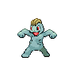 ワンリキー | Machop | macho（男らしい）がもとになっていると考えられている |
| 067 | 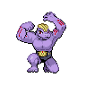 ゴーリキー | Machoke | macho（男らしい）がもとになっていると考えられている |
| 068 | Machamp | macho（男らしい）がもとになっていると考えられている | |
| 069 | 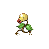 マダツボミ | Bellsprout | bell（鐘）とsprout（芽） |
| 070 | Weepinbell | weeping（しくしく泣く）とbell（鐘） | |
| 071 | Victreebel | victory（勝利）、tree（木）とbell（鐘） | |
| 072 | Tentacool | tentacle（触手）とcool（かっこいい、冷たい） | |
| 073 | Tentacruel | tentacle（触手）とcruel（残酷な） | |
| 074 | Geodude | geo-（「大地の」を表す接頭語）とdude（やつ） | |
| 075 | Graveler | gravel（砂利）、traveler（旅人）と-er（「〜する人」を表す語尾） | |
| 076 | Golem | フランス語の名前は「Grolem」で、gros（大きい）、golem（ゴーレム）から作られている | |
| 077 | Ponyta | pony（子馬）とbonita（スペイン語で「かわいい」） | |
| 078 | Rapidash | rapid（すばやい）、dash（突進）とash（灰） | |
| 079 | Slowpoke | ドイツ語の名前は「Flegmon」で、怪物から作られている | |
| 080 | Slowbro | slow（遅い）とbro（兄弟） | |
| 081 | Magnemite | magnet（磁石）とmite（ダニ、ちびっ子） | |
| 082 | Magneton | magnet（磁石）とton（トン） | |
| 083 | Farfetch'd | far-fetched（こじつけの）とunbelievable（信じられない） | |
| 084 | Doduo | dodo（ドードー）とduo（2人組） | |
| 085 | Dodrio | dodo（ドードー）とtrio（3人組） | |
| 086 | 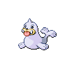 パウワウ | Seel | Pinniped（鰭脚類（アザラシなど））がもとになっていると考えられている |
| 087 | Dewgong | dew（露）とdugong（ジュゴン） | |
| 088 | Grimer | grime（汚れ）がもとになっていると考えられている | |
| 089 | Muk | muck（どろ）がもとになっていると考えられている | |
| 090 | 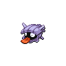 シェルダー | Shellder | shell（殻）とshelter（隠れ家） |
| 091 | 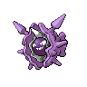 パルシェン | Cloyster | clam（二枚貝）とoyster（カキ） |
| 092 | 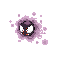 ゴース | Gastly | gas（ガス）、ghost（ゴースト）とghastly（ぞっとする） |
| 093 | 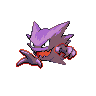 ゴースト | Haunter | haunt（取りつく）、-er（「〜する人」を表す語尾）とhunter（狩人） |
| 094 | Gengar | doppelgänger（ドッペルゲンガー、自分そっくりの分身）がもとになっていると考えられている | |
| 095 | Onix | onyx（しまめのう）がもとになっていると考えられている | |
| 096 | 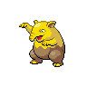 スリープ | Drowzee | drowsy（眠い）とzzz（グーグー（いびき）） |
| 097 | Hypno | hypnosis（催眠）がもとになっていると考えられている | |
| 098 | Krabby | crab（カニ）とcrabby（不機嫌な） | |
| 099 | 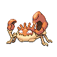 キングラー | Kingler | king crab（タラバガニ）とangler（釣り人） |
| 100 | Voltorb | volt（ボルト（電圧の単位））とorb（球） | |
| 101 | Electrode | electric（電気の）、explode（爆発する）、node（ネットワークの結び目）とelectronics（電子機… | |
| 102 | Exeggcute | execute（処刑する）、egg（卵）とcute（かわいい） | |
| 103 | Exeggutor | egg（卵）とexecutor（執行者） | |
| 104 | 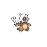 カラカラ | Cubone | cub（熊などの子）とbone（骨） |
| 105 | Marowak | bone marrow（骨髄）とwhack（バシッとたたく） | |
| 106 | Hitmonlee | hit（打つ）とmonster（怪物） | |
| 107 | Hitmonchan | hit（打つ）とmonster（怪物） | |
| 108 | Lickitung | lick（なめる）とtongue（舌） | |
| 109 | Koffing | coughing（せき）がもとになっていると考えられている | |
| 110 | Weezing | wheezing（ゼーゼー息をする）がもとになっていると考えられている | |
| 111 | Rhyhorn | rhinoceros（サイ）、rhyolite（流紋岩）とhorn（角） | |
| 112 | 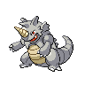 サイドン | Rhydon | rhinoceros（サイ）、rhyolite（流紋岩）、don（首領）と-don（「〜の歯」を表す語尾） |
| 113 | Chansey | chance（偶然）とchancy（運まかせの） | |
| 114 | Tangela | tangle（からまる）と-ella（小さいものを表す語尾） | |
| 115 | Kangaskhan | kangaroo（カンガルー）とGenghis Khan（チンギス・ハン） | |
| 116 | 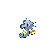 タッツー | Horsea | seahorse（タツノオトシゴ）とhorsie（お馬さん） |
| 117 | 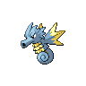 シードラ | Seadra | sea（海）、seahorse（タツノオトシゴ）、dragon（ドラゴン）とSyngnathidae（ヨウジウオ科） |
| 118 | Goldeen | goldfish（金魚）、golden（金色の）とqueen（女王） | |
| 119 | Seaking | sea（海）、king（王）とseeking（「探す」のもじり） | |
| 120 | 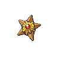 ヒトデマン | Staryu | star（星）とyou（あなた） |
| 121 | 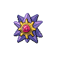 スターミー | Starmie | star（星）とmystery（なぞ） |
| 122 | Mr. Mime | Mister（「〜さん」）とmime（パントマイム） | |
| 123 | Scyther | scythe（大鎌）と-er（「〜するもの」を表す語尾） | |
| 124 | 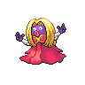 ルージュラ | Jynx | jinx（不吉なもの）、curse（呪い）とhex（不運の呪い） |
| 125 | Electabuzz | electric（電気の）とbuzz（ブンブン） | |
| 126 | 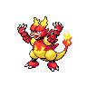 ブーバー | Magmar | magma（マグマ）とfulmar（フルマカモメ） |
| 127 | 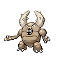 カイロス | Pinsir | pincer（はさみ）がもとになっていると考えられている |
| 128 | 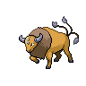 ケンタロス | Tauros | Kentauros（ギリシャ神話のケンタウロス）がもとになっていると考えられている |
| 129 | Magikarp | magic（魔法）とcarp（コイ） | |
| 130 | Gyarados | フランス語の名前は「Léviator」で、Leviathan（海の怪物リヴァイアサン）、or（金）から作られている | |
| 131 | 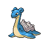 ラプラス | Lapras | フランス語の名前は「Lokhlass」で、ネス湖、Laplace（数学者ラプラス）、la classe（等級）から作られ… |
| 132 | 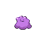 メタモン | Ditto | フランス語の名前は「Métamorph」で、métamorphe（変身するもの）から作られている |
| 133 | Eevee | ドイツ語の名前は「Evoli」で、Evolution（進化）から作られている | |
| 134 | Vaporeon | vapor（蒸気）とeon（ブイズの名前に共通する語尾） | |
| 135 | Jolteon | jolt（衝撃）とeon（ブイズの名前に共通する語尾） | |
| 136 | Flareon | flare（炎）とeon（ブイズの名前に共通する語尾） | |
| 137 | Porygon | ||
| 138 | 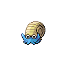 オムナイト | Omanyte | ammonite（アンモナイト）がもとになっていると考えられている |
| 139 | 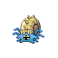 オムスター | Omastar | star（星）とfive-pointed shell（星形の殻） |
| 140 | Kabuto | ||
| 141 | Kabutops | -ops（「顔」を表す語尾）がもとになっていると考えられている | |
| 142 | Aerodactyl | ἀέρος aéros（ギリシャ語で「空気の」）、aeroplane（飛行機）とPterosaur（翼竜） | |
| 143 | 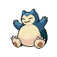 カビゴン | Snorlax | snore（いびき）、lax（ゆるい）とlackadaisical（ものぐさな） |
| 144 | 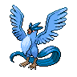 フリーザー | Articuno | arctic（北極の）とuno（スペイン語で「1」） |
| 145 | Zapdos | zap（ビリッ）とdos（スペイン語で「2」） | |
| 146 | 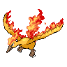 ファイヤー | Moltres | molten（溶けた）とtres（スペイン語で「3」） |
| 147 | Dratini | dragon（ドラゴン）、teeny（ちっちゃい）、tiny（ちっちゃい）とmini（小さい） | |
| 148 | 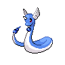 ハクリュー | Dragonair | dragon（ドラゴン）、air（空気）、debonair（あかぬけた）とlair（すみか） |
| 149 | 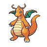 カイリュー | Dragonite | dragon（ドラゴン）、knight（騎士）、night（夜）とdraconite（竜の頭から取れるといわれた宝石） |
| 150 | Mewtwo | Mew（ミュウ）、mutant（突然変異体）とtwo（2） | |
| 151 | 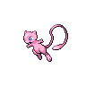 ミュウ | Mew | mutant（突然変異体）、mutation（突然変異）とnew（新しい） |